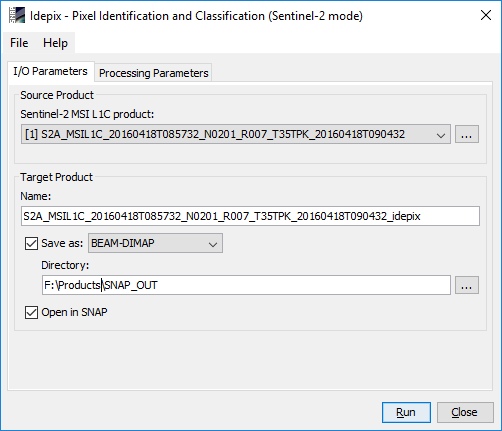
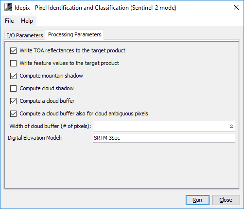
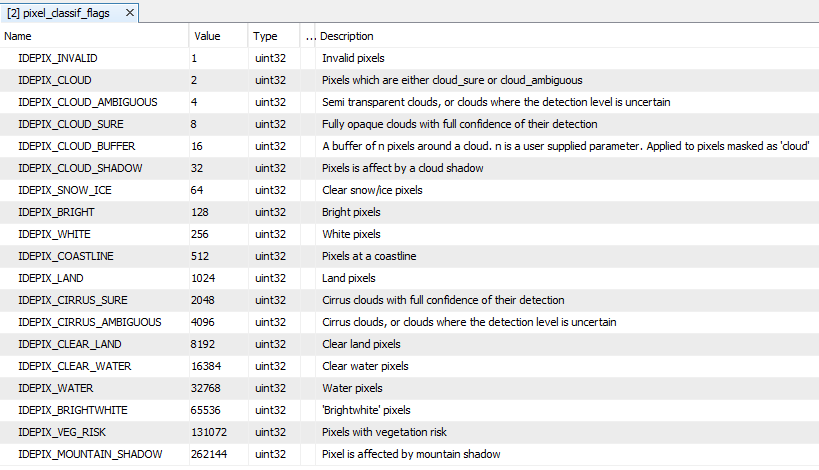
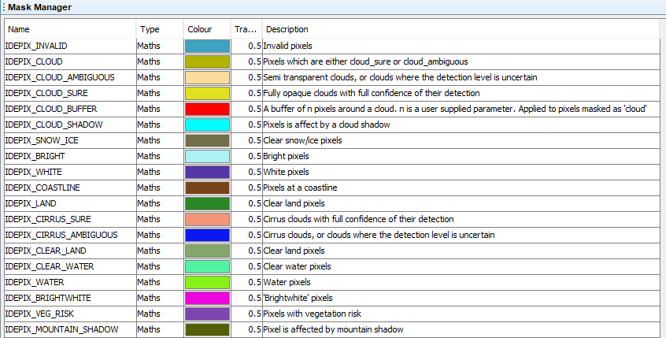

| S2 MSI - Processor Description |
|

Sentinel-2 MSI L1C product: Used to select the spectral source product. The source product shall contain spectral bands providing a source spectrum at each pixel. Use the ... button to open a data product currently not opened in the Sentinel Toolbox.
For product descriptions and file naming conventions see the Sentinel-2 MSI Product User Guide (https://sentinel.esa.int/web/sentinel/user-guides/sentinel-2-msi/product-types/level-1c).Name: Used to specify the name of the target product.
Save to: Used to specify whether the target product should be saved to the file system. The combo box presents a list of file formats.
Open in SNAP: Used to specify whether the target product should be opened in the Sentinel Toolbox. When the target product is not saved, it is opened in the Sentinel Toolbox automatically.

Write TOA reflectances to the target product:
Whether to add the TOA reflectance bands from the source L1C product to the target idepix product
Write feature values to the target product:
If true, the following bands will additionally be written to the target product:
Compute mountain shadow:
Whether to additionally compute a mountain shadow flag.
Compute cloud shadow:
Whether to additionally compute a cloud shadow flag.
Compute a cloud buffer:
Whether to leave an additional buffer around cluds during computation.
This buffer will be displayed as an extra flag and will be considered during the computation of, e.g., cloud shadow.
Compute a cloud buffer also for cloud ambiguous pixles:
Whether the buffer shall also be applied to pixels that have not unambiguously been identified as cloud.
Width of cloud buffer (# of pixels):
The width of the cloud buffer in pixels.
This value is only considered when cloud buffer computation has been selected.
Digital Elevation Model:
The IdePix processor will compute an elevation band and add it to the target product.
Here, you can specify which Digital Elevation Model shall be used for this.
Applicable Models are:

